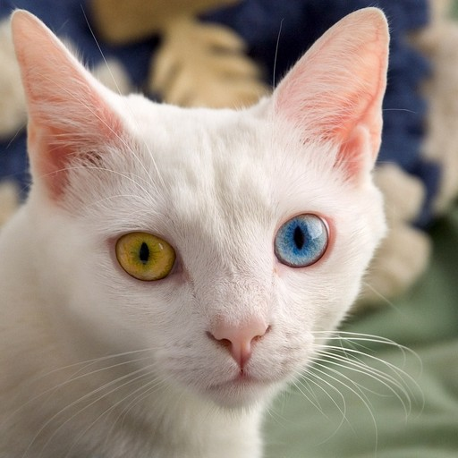

From pixels to tokens

A Vision Transformer does not look at pixels one at a time. It cuts the image into patches. On the slide the grid is 8 by 8, so 64 patches of 8 by 8 pixels. Dosovitskiy and colleagues use 16 by 16 pixel patches. A 224 pixel image then becomes 196 patches, plus one extra token.
One patch is three small tables, red, green, and blue, with values from 0 to 255. Divide by 255 and every value lies between 0 and 1. Flatten the three tables into one column: 3 × 8 × 8 = 192 numbers. Do that for every patch, in order, left to right and top to bottom. The input is 64 vectors of 192 numbers.
Each vector then goes through one shared linear layer. In the paper that layer is learned, and every patch uses it. For the base model the embedding has 768 numbers. What comes out is the embedding of the patch. From here the image is treated like a sentence: each patch is a token.
Position, because attention is parallel
Every token is processed the same way, at the same time. Nothing in that computation says which patch was first. Swap two words in a sentence and the meaning can reverse. Shuffle the 64 patches and every patch is still there, but it is no longer a face. So before attention, a position vector is added to each embedding. The stripes on the slide are the sinusoidal code from Vaswani and colleagues, 2017. The Vision Transformer paper instead learns one position vector per patch.
What attention computes
Each token is turned into three vectors by three learned matrices, the same matrices for every patch. The query is what this patch is looking for. The key is what it offers. The value is the information it passes on. That reading is a gloss; the computation is the three multiplications.
A class token is prepended. It belongs to no patch. It is a learnable vector with its own position, and in every block it can attend to all the patches. At the end, only its output goes to a small classifier and a softmax. The other patch outputs are not used for the class label.
One attention block compares every token with every other. The stack in the video is drawn as three blocks. The base model has twelve. Each block in the paper also has a small network applied to every token, layer normalization, and skip connections.
One score
Take the query of patch 1 and the key of patch j. Their dot product is large when the two vectors point the same way. Divide by the square root of d, the length of the vectors, so the numbers stay in a workable range. A softmax turns the scores into weights between 0 and 1 that add up to 1. The new vector for patch 1 is the weighted average of every value.
On the toy slide, one query meets four keys and the weights are 0.53, 0.20, 0.07, and 0.20. Those are computed on the slide, not taken from a trained model. For the 64-patch image, every patch does this at once, so each layer holds a 64 by 64 table of weights.
Four steps. Compare every query with every key, scale, softmax along each row, then mix the values.
score1j = q1 · kj / √d
a1j = softmaxj(score1j)
new1 = Σj a1j vj
Attention(Q, K, V) = softmax( Q Kᵀ / √dk ) V
The first three lines are one patch against every other patch. The last line, from Vaswani and colleagues, does all the patches at once. In the exercise, 196 tokens of 64 numbers go in, the score matrix is 196 by 196, and 196 tokens of 64 numbers come back out.
The exercises turn those steps into code. The notebook is Transformer exercises, in Colab. The weights there are random. Nothing in the exercise is trained.
To see the same computation in a real model, open Transformer Explainer. It runs GPT-2 small and shows each step. Pick an example and find the tokens. A token is not always a whole word, which is the same idea as cutting an image into patches. Then open attention and hover a token: which other tokens does it read, including one far away in the sentence? The question to take back to images is what would change if the tokens were patches. Cho, Kim, Karpekov, Helbling, Wang, Lee, Hoover, and Chau, Georgia Institute of Technology.
A global view, from the first layer
In a Vision Transformer, the two patches farthest apart attend to each other in layer 1, and again in every layer after. Every patch can draw on every other patch immediately. The video calls that a global receptive field.
A 3 by 3 convolution at the first patch sees only its neighbors. On the 8 by 8 patch grid, with no pooling, it takes seven layers before that view reaches the opposite corner. A real CNN works on pixels and uses pooling, but the point is the same: information from far away arrives only after many layers. Locality is an inductive bias. Nearby pixels are assumed to belong together. It is a good assumption for images, and it is why a CNN can learn from less data.
Shuffle the 64 patches and the local texture remains: fur, a whisker, the blue of the eye. The shape of the cat is gone. Keep only the outlines and the texture is gone, but the shape of the head remains. Geirhos and colleagues, in 2019, found that ImageNet-trained CNNs are biased toward texture. Tuli and colleagues, in 2021, found Vision Transformers more shape-biased than CNNs on the same kind of test, and still less shape-biased than people. The two pictures on the slide are illustrations computed from the photo.
The price, and the whole pipeline
Fix the patch at 16 by 16 pixels, the paper’s size. A 128 pixel image is 64 patches, and 64 × 64 is 4,096 attention values in each layer. Double the side to 256 and there are 256 patches, so 65,536 values: twice the side, four times the patches, sixteen times the attention. At 512 pixels, more than a million values per layer. At 2048 pixels, a size ordinary for medical or satellite images, about 268 million values in every layer. The number of patches grows with the square of the side, and attention grows with the square of the number of patches. Windowed attention, as in the Swin Transformer, and hierarchies that merge patches, are two ways around that.
With little training data, a Vision Transformer cannot compete with a CNN, because the CNN’s locality does part of the work. Dosovitskiy and colleagues showed the other side: trained on ImageNet alone, the Vision Transformer did worse than comparable CNNs, and pretrained on much larger datasets it did better. Given enough data, the model learns what the CNN had assumed.
A question the video does not ask. A newborn does not see millions of labeled images. What does that suggest about the assumptions built into human vision?
The pipeline, in order: cut the image into patches, flatten and normalize, embed with one shared linear layer, add position, prepend the class token, run a stack of attention blocks, take the class token out, and softmax over the classes.